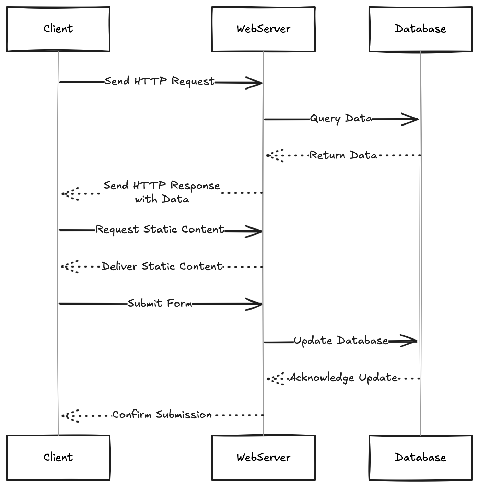
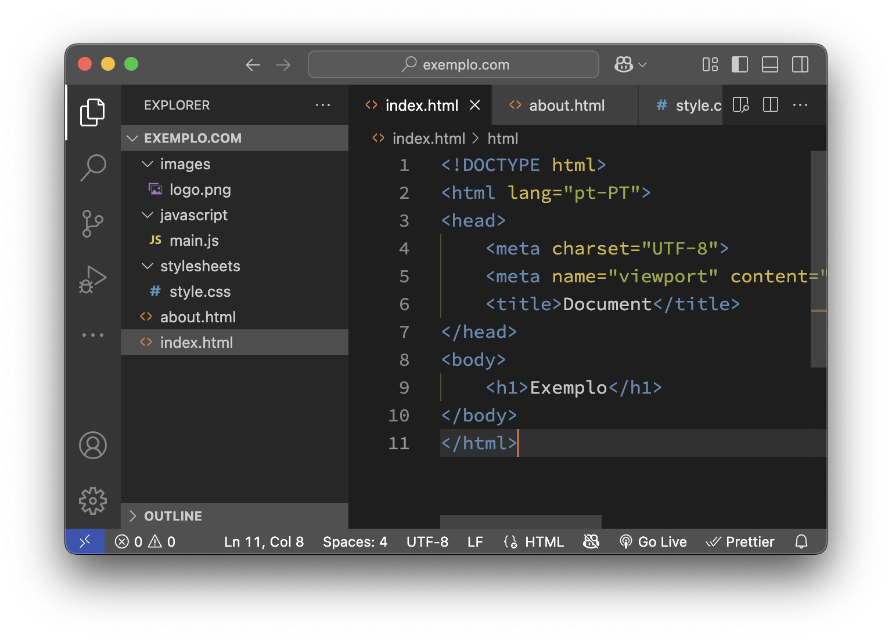
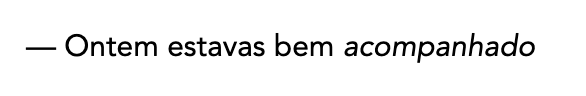
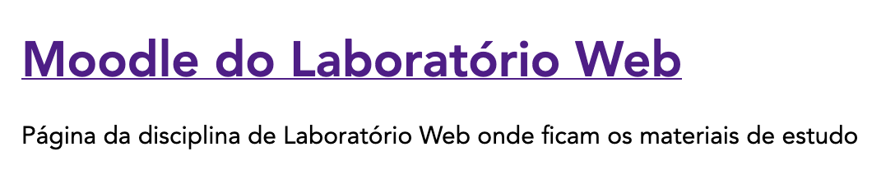
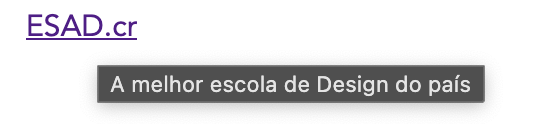

Como funciona a Web?
A web—World Wide Web—é um sistema complexo de computadores interligados que permite a comunicação e a partilha de informações através de uma rede global. Cada computador funciona como um nó na rede, e a comunicação entre eles é facilitada por protocolos específicos.
Aquilo a que chamamos de “web” é, na verdade, uma rede de computadores que se comunicam entre si utilizando um protocolo específico (HTTP) e que partilham informações através de documentos interligados (HTML). A web é uma parte fundamental da Internet, mas não é a única forma de comunicação online. Existem outras redes e protocolos que também permitem a troca de informações, como e-mail, FTP (File Transfer Protocol) e muitos outros.
A Web foi proposta em 1989 por Tim Berners-Lee, um cientista da computação britânico, enquanto trabalhava no CERN (Organização Europeia para a Pesquisa Nuclear). A ideia era criar um sistema que permitisse aos investigadores partilhar informações de forma fácil e rápida. Desde então, a Web evoluiu significativamente, tornando-se uma plataforma global para comunicação, comércio, entretenimento e muito mais.
APRENDER MAIS no artigo World Wide Web na Wikipedia.
A internet por sua vez é a rede que suporta a web, tendo os primeiros nós sido estabelecidos em 29 de Outubro de 1969 (e o sistema crashou ao fim do envio de 2 carateres). A internet é uma rede de redes, composta por milhões de computadores interligados que comunicam entre si através de protocolos padronizados. A web é apenas uma das muitas aplicações que utilizam a infraestrutura da internet.
APRENDER MAIS no artigo Internet na Wikipedia.
Estrutura Básica da Web
A web é composta por dois componentes principais:
- Clientes: Dispositivos que solicitam informações, como computadores, smartphones e tablets.
- Servidores: Computadores que armazenam e fornecem informações, como sites e aplicações web.
Arquitetura Cliente-Servidor
A comunicação entre clientes e servidores é feita através de um protocolo chamado HTTP (Hypertext Transfer Protocol). Quando um cliente solicita uma página web, o servidor responde enviando os dados necessários para exibir a página. Este processo envolve várias etapas ilustradas na figura:

- O cliente envia um pedido HTTP para o servidor.
- O servidor processa o pedido e organiza os dados necessários (pode aceder a uma base de dados ou processar um arquivo HTML, CSS, JavaScript ou outros recursos multimedia).
- O servidor envia uma resposta HTTP de volta ao cliente, contendo os dados solicitados.
- O cliente recebe a resposta e renderiza a página web no browser.
- Outros exemplos incluem o envio de formulários. Por exemplo quando fazemos login num site, o cliente envia os dados do formulário para o servidor, que processa a informação (regista na Base de Dados) e responde com uma página de confirmação ou redirecionamento.
Endereços Web e URLs
Os endereços web, conhecidos como URLs (Uniform Resource Locators), são usados para identificar recursos na web.
O URL pode ser algo como https://www.exemplo.com/pagina.html?id=123, onde:
- Protocolo: Indica o protocolo usado (por exemplo,
http://ouhttps://). - Domínio: O nome do site (por exemplo,
www.exemplo.com). - Caminho: O caminho para o recurso específico (por exemplo,
/pagina.html). - Parâmetros: Informações adicionais que podem ser passadas na URL (por exemplo,
?id=123).
Mas como é que o browser sabe onde encontrar o servidor associado a um domínio? É aqui que entra o DNS.
DNS (Domain Name System)
O DNS é um sistema que traduz nomes de domínio legíveis por humanos (como www.exemplo.com) em endereços IP numéricos (como 192.134.1.4). Isso permite que os clientes acedam aos servidores usando nomes amigáveis, em vez de ter que memorizar números complexos.
O processo de resolução de nomes envolve várias etapas:
- O cliente envia uma consulta DNS para um servidor DNS.
- O servidor DNS verifica se tem o endereço IP correspondente ao nome de domínio solicitado.
- Se não tiver, ele encaminha a consulta para outros servidores DNS até encontrar o endereço IP correto.
- O servidor DNS retorna o endereço IP ao cliente, que pode então estabelecer uma conexão com o servidor.
APRENDER MAIS no artigo DNS na MDN.
Respostas possíveis do servidor HTTP
As respostas do servidor HTTP são categorizadas por códigos de estado, que indicam o resultado do pedido. Alguns códigos mais comuns incluem:
- 200 OK: O pedido foi bem-sucedido e o servidor retornou os dados solicitados.
- 301 Moved Permanently: O recurso foi movido permanentemente para outro URL.
- 302 Found: O recurso foi encontrado, mas está temporariamente noutro URL.
- 403 Forbidden: O cliente não tem permissão para aceder ao recurso solicitado.
- 404 Not Found: O recurso solicitado não foi encontrado no servidor.
- 400 Bad Request: A solicitação do cliente é inválida ou está mal construída.
- 500 Internal Server Error: Ocorreu um erro no servidor ao processar o pedido.
APRENDER MAIS no artigo HTTP Status Codes na MDN.
Conteúdos enviados pelos servidores
Os servidores web enviam diferentes tipos de conteúdos para os clientes, dependendo do tipo de recurso solicitado. Os tipos mais comuns incluem:
- HTML: O conteúdo principal de uma página web, que define a estrutura e o layout.
- CSS: Folhas de estilo que definem a aparência visual da página.
- JavaScript: Scripts que adicionam interatividade e funcionalidades dinâmicas à página.
- Imagens: Arquivos de imagem (como JPEG, PNG, GIF) que são exibidos na página.
- Vídeos e Áudio: Conteúdos multimédia que podem ser incorporados na página para melhorar a experiência do utilizador.
- JSON: Formato de dados usado para troca de informações entre o cliente e o servidor, especialmente em aplicações web dinâmicas.
- XML: Outro formato de dados usado para troca de informações, embora menos comum que o JSON em aplicações web modernas.
- Arquivos de fontes: Tipos de letra personalizados que podem ser usados na página para melhorar a tipografia.
NOTA: A maioria dos sites modernos utiliza uma combinação desses tipos de conteúdo para criar experiências ricas e interativas. O HTML define a estrutura, o CSS estiliza a aparência e o JavaScript adiciona funcionalidades dinâmicas.
Estrutura de um Website
O que é um website?
Um website é um conjunto de páginas web interligadas, acessíveis através da internet, que podem conter texto, imagens, vídeos e outros tipos de conteúdo.
Cada página é escrita em HTML (HyperText Markup Language), pode ser estilizada com CSS (Cascading Style Sheets) para melhorar a apresentação visual, e pode incluir interatividade através de JavaScript.
As páginas web podem ainda incluir elementos multimédia, como vídeos e áudio.
Boas práticas na estrutura de um website
Embora estas três tecnologias possam ser codificadas todas no mesmo ficheiro (por exemplo num pequeno tutorial, ou pequena ilustração), é uma boa prática separá-las em ficheiros distintos para facilitar a manutenção e a legibilidade do código, principalmente em projetos maiores.
Para além disso a separação de ficheiros permite que diferentes pessoas trabalhem em diferentes partes do projeto sem conflitos, e também possibilita a reutilização de código em diferentes páginas ou até diferentes projetos.
Assim é normal organizar um website em três tipos de ficheiros, colocando-os em pastas distintas:
- HTML: Os ficheiros com a extensão
.htmlque contêm a estrutura e o conteúdo das páginas web devem ser colocados na raiz do projeto ou subpastas específicas conforme a organização do site. - CSS: Ficheiros com a extensão
.cssque definem o estilo e a apresentação visual das páginas devem ser colocados numa pasta chamadacss,stylesheetsoustyles, para manter a organização e facilitar a manutenção do código. - JavaScript: Ficheiros com a extensão
.jsque adicionam interatividade e funcionalidades dinâmicas às páginas web devem ser colocados numa pasta chamadajs,scriptsoujavascript.
Estrutura típica de um website
Um estrutura típica de um website pode ser organizada da seguinte forma:
├── index.html
├── about.html
├── contact.html
├── stylesheets/
│ ├── styles.css
│ └── responsive.css
├── javascripts/
│ ├── main.js
│ └── utils.js
└── images/
├── logo.png
└── banner.jpg
O ponto de entrada principal do website é geralmente o ficheiro index.html, que é carregado por defeito quando se acede ao domínio do site. Por exemplo, se o website estiver hospedado em www.exemplo.com, o servidor irá automaticamente procurar por index.html na raiz do projeto.
Por vezes certos servidores web podem ter configurações diferentes utilizando default.html, ou Iisstart.htm, mas index.html é o padrão mais comum e deve ser o vosso ponto de partida ao criar um website.

Os editores de código modernos, como Visual Studio Code, permitem criar e organizar facilmente os ficheiros e pastas do projeto. Normalmente possuem uma interface gráfica que mostra a árvore da pasta onde se situa o projeto o que facilita a criação de novas pastas e ficheiros, bem como a navegação entre eles.
Ferramentas e Ambientes de Desenvolvimento
- Ferramentas e Ambientes de Desenvolvimento
- Editores de Código
- Browser Moderno
- Ferramentas de Desenvolvimento (DevTools)
- Servidor Web Local
- Gestão de Versões com Git e GitHub
- O que é Git?
- O que é GitHub?
- Benefícios de um Sistema de controlo de Versão
- Diferenças Entre Trabalho Local e Controlo de Versão
- Exemplo: Um Projeto de Design
- Github pages
- Fluxo de trabalho Básico do Git
- Comandos git para tarefas comuns
- Criar um repositório
- Ver o estado do repositório
- Estados possíveis de um ficheiro
- Fazer alterações
- Utilizando o Github Desktop
- Github Desktop
- Exercício para explorar o Git e o GitHub
- Referências úteis
Neste capítulo, vamos explorar as ferramentas e ambientes de desenvolvimento mais comuns usados na criação de websites. Estas ferramentas ajudam os autores a escrever, testar e depurar o código de forma eficiente e rápida. Uma boa configuração de ambiente é essencial para o sucesso de qualquer projeto web.
Editores de Código
Os editores de código são ferramentas essenciais para escrever e editar código-fonte. Alguns dos editores mais populares incluem:
- Visual Studio Code: Um editor leve e extensível com suporte a várias linguagens de programação.
- Sublime Text: Um editor rápido e poderoso com uma interface minimalista.
- Notepad++: Um editor simples e eficaz para Windows.
- … outros editors de código como Atom, Brackets, etc.
A recomendação é usar o Visual Studio Code, pois é amplamente adotado e possui uma vasta gama de extensões que facilitam o desenvolvimento web. Embora os exemplos apresentados neste curso sejam feitos no Visual Studio Code, os conceitos são aplicáveis a qualquer editor de código.
Browser Moderno
É importante usar um browser moderno para testar e depurar websites. Os browsers mais comuns incluem:
- Google Chrome: Um dos browsers mais populares, com excelentes ferramentas de desenvolvimento integradas.
- Mozilla Firefox: Outro browser popular, conhecido por sua privacidade e extensões.
- Microsoft Edge: O browser padrão do Windows, baseado no Chromium.
- Safari: O browser padrão do macOS e iOS, com bom suporte a padrões web.
A recomendação é usar o Google Chrome ou o Mozilla Firefox, pois ambos possuem ferramentas de desenvolvimento robustas que facilitam a depuração e o teste de websites.
Browser Mobile
Para testar a responsividade e o comportamento de websites em dispositivos móveis, é importante também usar um browser móvel. Os browsers móveis mais comuns incluem:
- Google Chrome para Android: Versão móvel do Chrome, com suporte a ferramentas de desenvolvimento.
- Mozilla Firefox para Android: Versão móvel do Firefox, com suporte a extensões e ferramentas de desenvolvimento.
- Safari para iOS: O browser padrão do iOS, com suporte a ferramentas de desenvolvimento.
- Microsoft Edge para Android: Versão móvel do Edge, com suporte a sincronização e ferramentas de desenvolvimento.
Ferramentas de Desenvolvimento (DevTools)
É importante também instalar as Ferramentas de Desenvolvimento (DevTools) do browser, que permitem inspecionar o código HTML, CSS e JavaScript, depurar erros e otimizar o desempenho do site. Estas ferramentas estão disponíveis em todos os browsers modernos.
Para abrir as DevTools, geralmente pode-se usar a tecla F12 ou clicar com o botão direito do mouse na página e selecionar “Inspecionar” ou “Inspecionar Elemento”.
No caso do Safari é necessário ativar as ferramentas de desenvolvimento nas preferências do browser. Vá a “Preferências” > “Avançado” e marque a opção “Mostrar menu Develop na barra de menus” ou “Show features for web developers”. Depois disso, você pode aceder as DevTools através do menu “Develop”.
Servidor Web Local
Para testar websites localmente, é útil configurar um servidor web local. Isso permite simular o ambiente de produção e testar recursos como requisições HTTP, APIs e interações com o servidor.

A melhor forma de correr um servidor web local para testar o seu website é usar o Live Server, uma extensão do Visual Studio Code que permite iniciar um servidor local com um clique.
Para instalar, basta procurar por “Live Server” na loja de extensões do Visual Studio Code e clicar em “Instalar”. Depois de instalado, pode iniciar o servidor clicando com o botão direito do rato no ficheiro HTML e selecionando “Open with Live Server”.
Gestão de Versões com Git e GitHub
A gestão de versões é uma prática essencial no desenvolvimento de software, permitindo registar alterações no código, colaborar com outros programadores e reverter mudanças quando necessário.
O Git é o sistema de controle de versão mais popular, e o GitHub é uma plataforma que hospeda repositórios Git e facilita a colaboração entre parceiros de um projeto.
Para além disso o GitHub oferece funcionalidades grátis como alojamento da página web do projeto, através do GitHub Pages, que permite publicar sites estáticos diretamente de um repositório GitHub.
A forma mais fácil de começar a usar o Git e o GitHub é através do GitHub Desktop, uma aplicação que permite gerir repositórios Git de forma gráfica e intuitiva.
Mas há uma diferença entre o Git e o GitHub:
O que é Git?
- O Git é um dos sistemas de controlo de versão mais populares:
- Distribuído: Cada colaborador tem uma cópia completa do repositório.
- Rápido: Opera localmente, o que significa que muitas operações não dependem da internet.
- Flexível: Suporta workflows variados para diferentes tipos de projeto.
O que é GitHub?
- O GitHub é uma plataforma online que utiliza Git para guardar repositórios.
- Tem funcionalidades como:
- Interface Gráfica: Mais amigável para iniciantes.
- Colaboração: Ferramentas para revisão de código, issues e pull requests.
- Portfólio: Hospedar projetos publicamente ou privadamente.
Benefícios de um Sistema de controlo de Versão
- Histórico de Versões
- Aceder a versões antigas de arquivos.
- Saber o que mudou, quando mudou e quem fez a alteração.
- Colaboração em Equipa
- Permite que múltiplas pessoas trabalhem no mesmo projeto sem sobrescrever o trabalho uns dos outros.
- Backup Seguro
- Como o código está armazenado num repositório, há backup garantido.
Diferenças Entre Trabalho Local e Controlo de Versão
| Trabalho Local (Sem VCS) | Com Controlo de Versão |
|---|---|
| Arquivos duplicados (“final”, “final-final”, “v2”, etc.) | Um único repositório gerencia tudo |
| Difícil de acompanhar alterações | Histórico detalhado de modificações |
| Colaboração manual (e-mails, drives) | Colaboração simplificada em tempo real |
Exemplo: Um Projeto de Design
- Imagine que está a criar uma página web para um cliente.
- Com um VCS:
- Pode guardar a evolução do logotipo sem criar múltiplos arquivos.
- Pode compartilhar com colegas, receber feedback e integrar alterações facilmente.
- Pode rastrear o trabalho realizado e manter um histórico de alterações.
- Pode colaborar com outros designers e programadores de forma eficiente.
Github pages

Fluxo de trabalho Básico do Git
- Clonar ou Inicializar um Repositório
- Fazer Alterações Locais
- Guardar Alterações (Commit)
- Sincronizar com o Repositório Remoto (Push e Pull)
- Rever e Integrar Trabalhos em Equipa (Merge e Pull Requests)
Comandos git para tarefas comuns
{height=8cm}
Criar um repositório
criar um repositório vazio:
git init [nome do projeto]
clonar um repositório remoto
git clone URL_DO_REPO
Ver o estado do repositório
listar as alterações
git status
listar o registo total
git log
listar diferenças
git diff
Estados possíveis de um ficheiro
Os nossos ficheiros podem estar num de 3 estados
- modificado: quando acabamos de fazer uma alteração e gravamos o ficheiro.
- preparado: quando marcamos o ficheiro para ser submetido ao histórico do repositório [em lingo do git diz-se
staged] - confirmado: quando se registam os ficheiros
stagedno repositório [no lingo do git diz-secommited]
Fazer alterações
Marcar como preparado um ficheiro para ser adicionado ao repositório:
git add [ficheiro]
marcar [stage] todos os ficheiros como preparados
git add .
submeter ficheiros preparados [commit]
git commit -m "mensagem descritiva das alterações"
unstage (voltar ao estado modificado)
git reset [ficheiro]
unstage e perder alterações
git reset --hard
Utilizando o Github Desktop
Em alternativa à utilização do git diretamente no terminal, é possível utilizar a aplicação Github Desktop que permite realizar a maioria das tarefas do git e que permite integrar facilmente a conta do github.com
Github Desktop
Exercício para explorar o Git e o GitHub
Vamos criar um repositório no Github e criar uma pequena página pessoal de entrada.
- Criar uma conta no Github.
- Criar um repositório novo e dar-lhe um nome.
- Criar um ficheiro chamado index.html no repositório e editar com “Olá Mundo”.
- Fazer commit
- Nos settings ir à secção Github Pages e escolher o main branch
- Abrir o browser em http://[username].github.io/[nome_do_repositorio]
- Utilizar o Github Desktop para fazer um repositório clone local no vosso computador
- Fazer alterações ao ficheiro no repositório local.
- Fazer
commitepushe ver as alterações no repositório online.
Referências úteis
- https://git-scm.com/
- https://github.com/
- https://github.com/apps/desktop
- https://pages.github.com/
- https://marklodato.github.io/visual-git-guide/index-en.html
Introdução ao HTML
O HTML (HyperText Markup Language) é a tecnologia que define o conteúdo e estrutura de uma página web. Quando bem escrita também define a semântica dos conteúdos numa forma estruturada e inteligivel por computadores, tornando as páginas acessíveis a pessoas com necessidades especiais, e melhorando a sua classificação para aparecer em resultados de motores de busca (SEO). Neste capítulo vamos começar por falar das estruturas principais de um documento HTML.
O HTML é constituído por uma sequência de elementos que são utilizados para circunscrever (marcar) os conteúdos que pretendemos incluir na página.
Por exemplo considere a seguinte frase:
O meu gato é muito velho.
Se quisermos dar-lhe o destaque de ficar num parágrafo, em HTML devemos colocá-lo dentro de um elemento <p>.
<p>O meu gato é muito velho.</p>
Este HTML normalmente reside em documentos HTML, que possuem a extensão .html. Os conteúdos do ficheiro são editáveis com um editor de texto e normalmente o nome do ficheiro de entrada de um website é o index.html.
NOTA: Em HTML as Tags são case-insensitive. Isto significa que tanto
<p>como<P>são perfeitamente equivalentes, mas recomenda-se a adoptar um estilo coerente (todas minusculas ou todas maiusculas)
Anatomia de um Elemento HTML
<p>O meu gato é muito velho.</p>
No exemplo acima podemos ver que o elemento HTML é constituído por diversas partes:

- Uma tag de abertura de elemento HTML
<p> - O conteúdo do elemento HTML
- Uma tag de fecho do elemento HTML
</p>. As tags de fecho são iguais às Tags de abertura exceto que possuem o/para indicar tratarem-se de fecho de tag.
Sugestão de Exercício
No playground online da Mozilla pode experimentar os pequenos exercícios propostos.
Experimente copiar o elemento HTML anterior para a caixa de HTML do playground e faça run.
Experimente utilizar o elemento <strong> para circunscrever a palavra gato. O elemento <strong> modifica a palavra gato para ficar a negrito (bold).
Experimente também o elemento <em> (enfase), resultando num texto itálico.
Encapsulamento de elementos HTML
Os elementos podem ser colocados dentro de outros elementos. No caso anterior podemos encasular <strong> dentro do <p>:
<p>O meu <strong>gato</strong> é muito velho.</p>
é no entanto importante ter em atenção que o seguinte exemplo está errado:
<p>O meu <strong>gato é muito velho.</p></strong>
porque o encapsulamento do elemento <strong> não está dentro do <p>. A tag de fecho aparece fora do elemento pai. Todos os elementos HTML devem estar contidos dentro de outros elementos e a não observação desta regra pode levar a resultados inesperados.
Os browsers na presença destes erros, tentam renderizar a página e não crasham como acontece com um programa de computador. Isto deve-se a razões históricas. Os browsers sempre tentam renderizar os conteúdos HTML, aplicando alguns padrões. No entanto cada browser é livre de interpretar estes erros de forma livre pelo que é importante ter particular atenção aos possíveis erros para evitar efeitos iprevisiveis.
Elementos HTML só com TAGs de abertura ou elementos vazios
Nem todos os elementos HTML seguem o padrão <tag de abertura>conteúdo</tag de fecho>. Alguns elementos consistem apenas numa única tag. São normalmente elementos que são utilizados para inserir algum elemento multimedia no documento. Um exemplo destes elementos é o elemento <img> utilizado para inserir imagens no documento HTML.
<img src="logo.png" alt="Logotipo da Empresa">
Neste exemplo a tag <img> tem no seu interior (entre o < e o>) duas propriedades extras: a propriedade src="logo.png" define qual o nome do ficheiro de imagem a mostrar, e a propriedade alt="Logotipo da Empresa" descreve a imagem para o caso de a imagem não poder ser lida, ou para o caso em que o utilizador esteja a utilizar um sistema de acessibilidade.
NOTA: Nos elementos HTML como o
<img>em que não há tag de fecho pode ser utilizada uma/de fecho antes do>final. por exemplo<img src="logo.png" alt="Logotipo da Empresa" />
Atributos
Os elementos HTMl também podem ter atributos. Por exemplo:
<p class="nota-pessoal">O meu gato é muito velho.</p>
Neste exemplo o elemento <p> tem um atributo class="nota-pessoal" que define a class deste elemento. Classes são uma forma de classificar elementos para posteriormente serem estilizados utilizando CSS.
Os atributos são colocados nas tags de abertura e devem ter o nome do atributo, seguido de um igual e de valor do atributo, normalmente entre aspas (") ou plicas (').
NOTA: Não são permitidas aspas ou plicas tipográficas “ ” ou ‘ ’
Exercício
No playground online da Mozilla copie o seguinte código:
<img>
Nesta imagem coloque os seguintes atributos:
srccom o ficheiro localizado no endereçohttps://picsum.photos/200(para além de nomes de ficheiros também é possivel utilizar URLs de imagens que estejam já publicadas online)altuma descrição da imagemwidthdefina uma largura para a imagem (em pixels)heightdefina uma altura para a imagem (em pixels)
Um resultado poderá ser:
<img src="https://picsum.photos/200" alt="Imagem de demonstração" width="300" height="400">
Para acomodar melhor os atributos do elemento HTML é possível colocá-los em multiplas linhas para facilitar a leitura:
<img
src="https://picsum.photos/200"
alt="Imagem de demonstração"
width="300"
height="400"
>
No entanto convém sempre ter atenção à legibilidade dos elementos no contexto da página html que estamos a escrever.
Atributos booleanos
Por vezes vai encontrar atributos sem a atribuição de um valor. Estes atributos são booleanos. Atributos booleanos são atributos que são verdadeiros (existem) ou falsos (não existem). Por exemplo, o atributo disabled que informa o browser que o elemento de entrada de texto input está “desligado”, pode ser escrito das duas formas seguintes:
<input type="text" disabled="disabled" />
em que o atributo disabled é definido com a atribuição da string com o próprio nome do atributo “disabled” ou simplesmente
<input type="text" disabled />
em que apenas se coloca o nome do atributo que se quer ativar.
CURIOSIDADE Booleano vem do nome de George Boole, um matemático do século XIX inventor da algebra booleana.
Aspas, Plicas ou nenhum dos dois?
Por vezes podem-se encontrar páginas web com código ligeiramente diferente daquele especificado no standard. Uma das alterações que poderá encontrar diz respeito à não utilização de aspas ou plicas. Por exemplo uma ancora <a> para fazer uma hiperligação a outra página pode aparecer sem aspas no atributo href:
<a href=http://www.example.com/>Website de Exemplo</a>
Embora funcione no caso do URL, uma vez que o URL não contém espaços, se começarmos a adicionar outros atributos como o title1
<a href=http://www.example.com/ title=Website para exemplo>
Website de Exemplo
</a>
Se testarmos este código no playground verificamos que ao parar o rato em cima do link o título que aparece não é correto aparecendo apenas “Website” sendo o resto do título truncado.
RECOMENDAÇÃO: Utilize sempre aspas
"ou plicas'para definir os atributos.
Quanto à utilização de aspas " ou plicas ', a escolha é indiferente e normalmente uma escolha de estilo pessoal ou das definições da equipa com que está a trabalhar.
Também não é possível delimitar um atributo misturando aspas e plicas. Por exemplo "Página pessoal' é errado e não vai ser aceite pelo browser dando resultados inesperados porque mistura os dois tipos de delimitadores.
Acima de tudo recomenda-se consistência. O exemplo anterior deveria ser escrito numa das duas seguintes formas:
<a href="http://www.example.com/" title="Website para exemplo">
Website de Exemplo
</a>
<a href='http://www.example.com/' title='Website para exemplo'>
Website de Exemplo
</a>
Quando se utiliza um tipo (aspas ou plicas), pode-se utilizar o outro tipo dentro do texto. Isto implica que se utilizar aspas como delimitador é possível usar a plica como conteúdo (útil para lingua inglesa para contrações como I’m, ou can’t). Por exemplo:
<a
href="http://www.example.com/"
title="I can't really see any content in this website">
Website de Exemplo
</a>
o title aparece quando se para o rato sobre a hiperligação
Até agora aprendemos alguns aspetos dos elementos HTML. Está na altura de introduzir a estrutura do documento HTML na secção seguinte, onde vamos combinar os diferentes elementos para criar uma página HTML.
Anatomia de um documento HTML
Anteriormente vimos o que são elementos HTML e algumas das suas características. Pela combinação desses elementos é possível criar uma página HTML completa.
Um documento HTML mínimo pode ser algo como:
<!doctype html>
<html lang="en-US">
<head>
<meta charset="utf-8" />
<title>My test page</title>
</head>
<body>
<p>This is my page</p>
</body>
</html>
Neste documento vemos diferentes elementos HTML:
<!doctype html>o doctype é uma declaração inicial na primeira linha de um documento html que indica ao browser que tipo de documento se seguirá e que conjunto de regras é que o documento segue. Historicamente pode encontrar definições de doctpype diferentes, mas a web moderna precisa apenas desta definição simples.<html></html>Este elemento engloba todo o documento. É a raiz do árvore do documento e todos os restantes elementos são interiores.<head></head>Este elemento é um contentor para todo os tipos de dados que quiser incluir na página e que não são renderizados como conteúdo. Isto inclui o título da página (utilizado pelo browser), palavras chave, descrição, declaração de estilos a utilizar, entre outros.<meta charset="utf-8" />O elemento<meta>é utilizado para definir diferentes tipos de metadados que não são definidos por outros elementos. No exemplo define a codificação de caracteres como sendo UTF-8, que inclui a maioria de caracteres das linguagens humanas.<title></title>este elemento define o título da página que aparecerá nos separador do browser e nos bookmarks.<body></body>Este elemento é o contentor de todos os elementos HTML que são renderizados para o utilizador. No exemplo apenas inclui um parágrafo<p></p>.
Exercício
Agora que o temos um documento HTMl devemos começar a utilizar um editor de texto em vez do playground online1.
Recomenda-se a utilização do Visual Studio Code, uma vez que é bastante completo e bem suportado. No entanto qualquer editor de texto permite editar HTML. Se por acaso estive num computador que não tenha nenhum editor e onde não possa instalar um, pode utilizar uma versão web do editor. Pode também consultar uma lista de editores de código fonte para escolher um.
- Copie o código do documento HTML básico parar um ficheiro novo. Grave-o com o nome
index.html. Esta será a sua página de entrada. - Abra o ficheiro com o browser e verifique que a página foi renderizada corretamente antes de seguir as instruções seguintes.
Instruções
- A seguir à tag
<body>adicione uma linha para colocar o cabeçalho principal do documento. O html permite definir Headings de diferentes níveis por ordem de importância. O título de uma página é normalmente definido pelo Heading 1. O elemento HTML para o definir é<h1></h1>. Experimente adicionar este elemento e coloque o texto “A minha página” entre as tags de abertura e de fecho do heading 1 - Altere o texto do parágrafo para descrever algo sobre si. Por exemplo uma pequena biografia.
- Selecione algumas palavras importantes da sua biografia e marque-as com o elemento
<strong>. - Adicione uma hiperligação
<a>dentro desse parágrafo para um website a seu gosto, ou para a escola. - Adicione uma imagem
<img>à página. Coloque-a a seguir ao parágrafo. Se a imagem for muito grande utilizewidth=...eheight=...para a redimensionar. A imagem pode estar online ou pode ser uma imagem de um ficheiro no seu computador.
Um exemplo de um resultado possível pode ser visto a seguir:
<!doctype html>
<html lang="pt-PT">
<head>
<meta charset="utf-8" />
<title>David Sousa-Rodrigues</title>
</head>
<body>
<h1>A minha página pessoal</h1>
<p>Sou professor na
<a href="https://www.ipleiria.pt/esadcr/" title="ESADcr">
Escola Superior de Artes e Design</a> das Caldas da Rainha.
Gosto de ensinar e de jogar Xadrez</p>
<img src="foto-01.jpg"
alt="Foto de David Sousa-Rodrigues"
width="300">
</body>
</html>

Espaço em branco
No exemplo anterior pode ter reparado que há imenso espaço em branco dentro dos elementos HTML. O espaço em branco em HTML é opcional. Os dois exemplos seguintes são equivalentes.
<p id="noWhitespace">Dogs are silly.</p>
<p id="whitespace">Dogs
are
silly.</p>
Em HTML o espaço em branco dentro de um elemento HTML é normalmente colapsado a um espaço. Isto inclui quebras de linha, tabulações e espaços. A vantagem desta abordagem é que nos permite aumentar a legibilidade do código HTML.
Carateres especiais em HTML
Os carateres <, >, ", ' e & são especiais uma vez que fazem parte da sintaxe do HTML. Quando é necessário inserir estes carateres no próprio texto é devemos utilizar uma codificação especial para os representar. Cada caráter pode ser escrito por uma referência que começa com o caráter & e termina com ponto e virgula ;.
| caráter | Referência |
|---|---|
| < | < |
| > | > |
| “ | " |
| ’ | ' |
| & | & |
A lista de referência de carateres é extensa e pode ser consultada online. Para além da referência de nomes de carateres é também possível referenciálos pelo seu número decimal ou hexadecimal.
Por exemplo, o caráter β pode ser escrito em HTML com as referências β β, ou β. Note que as representações numéricas possuem o simbolo # seguido de um número. No caso da representação hexadecimal o número começa com um x. Online as representações do caráter estão normalmente no formato U+003B2, onde o U+ indica tratar-se da representação em codificação Unicode e o número aparece com zeros à esquerda que podem ser incluidos ou não quando se referência o número no HTML da nossa página.
Comentários em HTML
O HTML tem um mecanismo para definir comentários no código. Um comentário é algo que não será renderizado pelo browser e que serve apenas para incluir notas no código para facilitar o desenvolvimento da página web. Os comentários utilizam uma TAG especial <!-- comentário -->. No exemplo anterior podemos adicionar comentários que descrevam o código:
<!doctype html>
<html lang="pt-PT">
<head>
<meta charset="utf-8" />
<title>David Sousa-Rodrigues</title>
</head>
<body>
<!-- Escrever um Cabeçalho melhor, talvez mudar para o nome -->
<h1>A minha página pessoal</h1>
<!--
Pequena Bio, não se quer muito longa. Os comentários
HTML podem ocupar multiplas linhas.
-->
<p>Sou professor na
<a href="https://www.ipleiria.pt/esadcr/" title="ESADcr">
Escola Superior de Artes e Design</a> das Caldas da Rainha.
Gosto de ensinar e de jogar Xadrez</p>
<!-- Tirar uma foto nova. Esta é muito antiga -->
<img src="foto-01.jpg"
alt="Foto de David Sousa-Rodrigues"
width="300">
</body>
</html>
Tudo o que estiver dentro da tag de comentário será ignorado pelo browser.
Elementos HTML para o Body
O objetivo do HTML é estruturar o documento que vai ser mostrado ao utilizador. Vamos explorar aqui os principais elementos disponíveis para estruturar diferentes tipos de informação.
- Elementos HTML para o Body
Cabeçalhos e parágrafos

a Maioria do texto estruturado consiste em cabeçalhos e parágrafos, seja em livros, jornais ou revistas entre outros. Esta estruturação dos conteúdos facilita a legibilidade e a transmissão da mensagem.
Parágrafos
Em HTML, cada parágrafo é definido pelo elemento HTML <p>. Por exemplo:
<!-- O parágrafo é o principal elemento para
estruturar o corpo de texto -->
<p>A Escola conta com cerca de 1600 alunos e 130 professores</p>
Os textos dos parágrafos podem ainda conter palavras ou partes que sejam de particular importância. Desde o início que o HTML inclui alguns elementos que permitem destacar partes de uma frase. Por exemplo para dar enfase podemos utilizar a tag <em> (de empahsis). Por exemplo:
<p>— Ontem estavas bem <em>acompanhado</em></p>

Os browsers normalmente renderizam o elemento <em> como itálico, embora o objetivo não deva ser apenas de o estilizar como itálico, uma vez que os dispositivos de leitura assistida vão interpretar o elemento de outra forma, por exemplo mudando o tom de voz.
Também está disponível a tag <strong> quando queremos destacar uma palavra.
<p>— <strong>Não</strong> te vou dizer nada</p>
Neste caso a palavra Não foi destacada pelo browser com negrito.
Quer o elemento <em> quer o <strong> tem significado semântico definido e são interpretados pelos diferentes dispositivos de leitura de acordo. No entanto há alguns elementos mais antigos que não são tão claros quanto ao seu valor semântico.
Os elementos <b>, <i> e <u> originalmente foram implementados para dar estilos de itálico, negrito e sublinhado numa altura em que os estilos CSS não existiam. Assim acabaram por ser só elementos HTML de apresentação sem possuirem associados um valor semântico. Devem ser evitados em favor de <em> e <strong>.
Quanto à utilização do sublinhado convém notar que na Web o sublinhado é entendido como uma hiperligação, pelo que quando for necessário utilizar uma marca que cumpra o papel do sublinhado, pondere substituí-lo por outro elemento como por exemplo <mark> ou então redefinir o estilo em CSS para não incluir o sublinhado que se possa confundir com a hiperligação.
Cabeçalhos
Os cabeçalhos permitem destacar os títulos, dando destaque a diversas mensagens. O HTML fornece 6 níveis de cabeçalhos. Os elementos HTML para definir cada um desses níveis são <h1>, <h2>, <h3>, <h4>, <h5>, <h6>. Por exemplo:
<!-- Título de nível de importância mais elevado -->
<h1>ESADcr - Escola de artes e design</h1>
Implementando uma hierarquia
Dadas as importâncias relativas de cada tipo de elemento HTML é normal (e importante) estruturar o documento de forma hierarquica de forma a que a estrutura seja portadora de sentido semântico.
Assim é normal definir para cada página um título principal <h1> que representa o título da página1, sendo que o nível <h2> é utilizado para o título de cada secção/capítulo, e o elemento <h3> representa normalmente as subsecções do documento.
Um pequeno exemplo da utilização de cabeçalhos com parágrafos:
<h1>O Furo Esmagador</h1>
<p>Por Chris Mills</p>
<h2>Capítulo 1: A noite escura</h2>
<p>
Era uma noite escura. Algures, uma coruja piava.
A chuva caía sobre o...</p>
<h2>Capítulo 2: O silêncio eterno</h2>
<p>O nosso protagonista não conseguiu arrancar
nem um sussurro da figura sombria...</p>
<h3>O espetro fala</h3>
<p>
Passaram-se mais algumas horas quando, de repente,
o espetro se sentou na vertical e exclamou:
"Por favor, tem piedade da minha alma!"
</p>
O resultado pode ser observado online no exemplo de Cabeçalhos e Parágrafos e na figura seguinte:

Porque é importante a estrutura?
Há várias razões para que um documento HTML tem uma estrutura hierarquizada:
- Os utilizadores ao abrir uma página tendem a fazer uma observação rápida para encontrar pontes de referência visual, ou para ler apenas os cabeçalhos. O tempo que cada utilizador gasta a ler uma página é muito reduzido, pelo a estrutura tem que ajudar o utilizador a obter a informação importante.
- Os motores de pesquisa indexam a página e tem em consideração os conteúdos dos cabeçalhos para definir a importância de palavras-chave. Sem cabeçalhos a página vai ser incapaz de ficar bem classificada nos resultados dos motores de pesquisa.
- Utilizadores com dificuldades visuais (amblíopes) normalmente não leem a página, mas antes ouvem uma leitura sintetizada por um leitor de ecrã. Uma das características deste tipo de software é que fornecem ao utilizador um sistema de navegação baseado nos cabeçalhos. Se os cabeçalhos não existirem isto obriga o utilizador a ouvir a totalidade do documento até encontrar o que procura.
No exemplo anterior, se retirassemos toda a estrutura (retirar os elementos HTML), o resultado não representaria a intenção original do autor.
O Furo Esmagador
Por Chris Mills
Capítulo 1: A noite escura
Era uma noite escura. Algures, uma coruja piava.
A chuva caía sobre o...
Capítulo 2: O silêncio eterno
O nosso protagonista não conseguiu arrancar
nem um sussurro da figura sombria...
O espetro fala
Passaram-se mais algumas horas quando, de repente,
o espetro se sentou na vertical e exclamou:
"Por favor, tem piedade da minha alma!"

Porque é importante a semântica?
Semântica: Parte da linguística que estuda o significado das palavras. Que está relacionado com o significado dos objetos ou termos.
Nos dia a dia a semântica está em toda a parte—Utilizamos a nossa experiência para saber qual a função de cada objeto que encontramos; Quando vemos algo sabemos qual a sua função. Uma luz vermelha num semáforo significa “PARAR” e verde significa “AVANÇAR”. Se a conexão semântica entre objeto e significado não existisse podem imaginar o caos que seria atravessar uma rua.
Da mesma forma, no HTML diferentes elementos HTML possuem valores semânticas—vimos o caso do parágrafo e dos cabeçalhos. Os browsers normalmente atribuem valores semânticos a estes elemento, renderizando por exemplo o <h1> como um tamanho maior que o <h2> e assim sucessivamente.
Também há elementos sem valor semântico. Por exemplo o elemento HTML <span> serve apenas para circunscrever conteúdos para posterior estilização com CSS, não tendo em si mesmo nenhum significado particular.
Hiperligações e navegação
A invenção da hiperligação permitiu que a Web fosse mais do que um conjunto de documentos isolados, mas antes um sistema de páginas interconetadas por ligações entre si. A ideia de uma hiperligação é a de que um documento pode ter uma âncora que permite ao utilizador visitar outras páginas, recursos ou outras partes do mesmo documento, bastando clicar nessa pequena âncora. Qualquer conteúdo web pode ser convertido numa hiperligação através da atribuição de um URL (Uniform Resource Locator).
Anatomia de uma hiperligação
A hiperligação é criada circunscrevendo o texto ou outro conteúdo dentro do elemento <a> (Âncora). O elemento âncora necessita ainda de saber qual o URL para onde deve apontar, pelo que é necessário incluir o atributo href. Por exemplo:
<p>Este parágrafo contém uma ligação
para a <a href="https://www.ipleiria.pt/esadcr/">ESAD</a></p>
Hiperligações de outros elementos HTML
No exemplo a palavra ESAD foi transformada numa hiperligação. No entanto quase todos os tipos de conteudos podem ser convertidos numa hiperligação. Por exemplo se quisermos converter o cabeçalho de uma página numa hiperligação podemos circunscrevê-lo com o elemento <a>:
<a href="https://ead.ipleiria.pt/">
<h1>Moodle do Laboratório Web</h1>
</a>
<p>Página da disciplina de Laboratório Web
onde ficam os materiais de estudo</p>

Hiperligações de imagens
É possível transformar uma imagem numa hiperligação circunscrevendo o elemento <img> com o elemento <a>.
<a href="https://www.ipleiria.pt/esadcr/">
<img src="https://www.example.com/image.png" alt="Imagem Exemplo">
</a>
Atributos extra das hiperligações
Para além do atributo href que indica à âncora qual o URL para o qual vai apontar, é importante também definir o atributo title que descreve o URL de destino. Para além disso os Browsers mostram esta descrição quando o rato é parado por algum tempo em cima da hiperligação2:
<a href="https://www.ipleiria.pt/esadcr/"
title="A melhor escola de Design do país">ESAD.cr</a>

O elemento âncora permite definir a janela onde a hiperligação vai surgir. Para que a hiperligação apareça numa nova janela deve-se utilizar o atributo target com a propriedade _blank
<a href="https://www.ipleiria.pt/esadcr/"
title="A melhor escola de Design do país"
target="_blank">ESAD.cr</a>
Hiperligações e caminhos de ficheiros
Os URLs das âncoras utilizam o texto do atributo href para determinar que ficheiro enviar ao utilizador. Estas páginas podem estar em diferentes pastas do servidor.
Por exemplo, a página contactos.html será procurada na mesma pasta da página que contém o link seguinte.
<a href="contactos.html">Contactos</a>
No exemplo seguinte, a página contactos.html será procurada numa subpasta pessoas em relação à página que contém o link seguinte.
<a href="pessoas/contactos.html">Contactos</a>
No exemplo seguinte, a página contactos.html será procurada numa pasta pai em relação à página que contém o link seguinte.
<a href="../contactos.html">Contactos</a>
No exemplo seguinte, a página contactos.html será procurada na raiz do website e é independente da subpasta que contém o link seguinte.
<a href="/contactos.html">Contactos</a>
Em sumário:
<a href="contactos.html">Contactos</a> <!-- mesma pasta -->
<a href="pessoas/contactos.html">Contactos</a> <!-- numa subpasta -->
<a href="../contactos.html">Contactos</a> <!-- numa pasta pai -->
<a href="/contactos.html">Contactos</a> <!-- na raiz do website -->
Hiperligações para fragmentos do documento
As âncoras permitem também criar ligações para fragmentos dentro da própria página. Por exemplo, esta página tem um indice no topo cujas hiperligações apontam para os títulos principais do documento.
Para escrever estas hiperligações a página tem que definir atributos id para os objetos que queremos indexar. Por exemplo se tivermos um elemento <h2> com o “id=morada” podemos depois escrever uma hiperligação para esta localização:
<h2 id="morada">Morada da Escola<h2>
<!-- .... -->
<a href="#morada">Ver Morada</a>
Notar que o atributo href contém #. O simbolo # significa que a palavra seguinte é um id, no caso #morada indica ao browser para apontar para o elemento com o id=morada.
Melhores práticas
Dada a importância das hiperligações é necessário que estas sejam feitas tendo algum cuidado.
- Os leitores de ecrã utilizam os textos das hiperligações para navegar na página.
- Os motores de busca utilizam o texto das hiperligações para definir os conteúdos indexados. Textos fracos são prejudiciais à indexação. Por exemplo um link
<a href="...">Clique aqui</a>não é descritivo daquilo que é ligado e portanto é uma má hiperligação. - Quando se criam hiperligações para recursos que não são HTML—por exemplo PDFs, Vídeos—convém indicar que a hiperligação aponta para um tipo de ficheiro que o utilizador pode não estar à espera. Por exemplo
<a href="manual-pdf">Manual de Normas (PDF)</a>indica no texto que a hiperligação aponta para um PDF.
O elemento <a> permite ainda uma variedade de atributos para diversas funções mais avançadas que podem ser consultadas na página do elemento <A> no MDN.
é possivel utilizar mais do que um <h1> numa página, mas é desaconselhado uma vez que <h1> representa o título da página. Também não devem ser utilizados cabeçalhos de níveis menos importantes sem antes estarem definidos os cabeçalhos pai (por exemplo, não utilizar <h3> sem antes ter utilizado o <h2>). Apesar de haver seis níveis, é raro um documento bem estruturado necessitar mais do que os primeiros 3 níveis.
Listas
A noção de lista é de particular importância na produção de documentos de qualquer tipo (impresso, livros, online, epubs, etc). O HTML das páginas web suporta dois tipos de listas: listas não ordenadas e listas ordenadas. Para isso é necessário utilizar os elementos HTML <ul> (unordered list) ou <ol> (ordered list).
Por exemplo, uma lista de compras pode incluir os seguintes itens:
leite
ovos
pão
farinha
legumes
esta lista não tem uma ordenação natural (depende da percurso que fizermos dentro do supermercado apenas) pelo que em HTML podemos renderizar a lista utilizando uma lista não ordenada <ul> na qual cada um dos itens é construído com o elemento <li> (list item)
<ul>
<li>leite</li>
<li>ovos</li>
<li>pão</li>
<li>farinha</li>
<li>legumes</li>
</ul>

Por outro lado, podemos ter situações em que a ordem é importante, por exemplo quando seguimos uma receita, ou quando seguimos direções de para um destino numa viagem. Nestes casos utilizamos uma lista ordenada <ol>:
<ol>
<li>Caminhar 400m</li>
<li>Virar à esquerda na Escola</li>
<li>Avançar até à Biblioteca</li>
<li>Subir as escadas</li>
<li>Abrir a porta</li>
<li>Procurar um Livro sobre HTML</li>
</ol>

A lista ordenada é renderizada com uma numeração árabe automatica. A única diferença entre os dois casos está na definição da lista (<ul> ou <ol>). Os itens que as compõe são <li> em ambos os casos.
Listas hierarquicas
As listas podem ser colocadas dentro de itens de outras listas criando dessa forma uma hierarquia de listas. Por exemplo, no caso seguinte temos uma lista de tarefas a realizar pela ordem apresentada. No entanto, a tarefa Ir ao ginásio obriga a verificar se temos todo o equipamento. Neste caso utilizamos uma lista não ordenada
<ol>
<li>Mudar óleo do carro</li>
<li>Ir ao ginásio
<ul>
<li>Toalha</li>
<li>T-shirt</li>
<li>Calções</li>
<li>Sapatilhas</li>
</ul>
</li>
<li>Fazer o jantar</li>
</ol>

Listas de definições
Para além das listas não ordenadas e ordenadas, há um tipo de listas especial para o caso em que temos definições. Podemos encontrar este tipo de listas em dicionários, ou glossários. Nestes casos temos normalmente um termo a definir e a sua definição. Em HTML é possível marcar o texto como sendo listas <dl> (definition list) e com os elementos <dt> e <dd> para respetivamente o termo e definição.
<dl>
<dt>design</dt>
<dd>
Disciplina que visa a criação de objectos, ambientes, obras
gráficas, etc., ao mesmo tempo funcionais, estéticos e conformes
aos imperativos de uma produção industrial.
</dd>
<dt>pantomima</dt>
<dd>
Arte de exprimir os sentimentos, as paixões, as ideias,
por meio de gestos e atitudes, sem recorrer à palavra.
</dd>
</dl>

No exemplo acima cada termo definido <dt> tem uma definição <dd> mas é possível ter mais do que uma definição para um termo, bastando adicionar mais elementos <dd>.
<dt>pantomima</dt>
<dd>
Arte de exprimir os sentimentos, as paixões, as ideias,
por meio de gestos e atitudes, sem recorrer à palavra.
</dd>
<dd>
Representação teatral em que os actores se exprimem unicamente
por meio do gesto.
</dd>
Exercício prático
Considere a seguinte receita de Húmus e aplique os elementos HTML apropriados para marcar a receita de forma coerente e apropriada.
- Utilize os elementos h1 e h2 para marcara o título e as três secções.
- Utilize o elemento p para marcar os parágrafos
- Utilize os elementos ul e ol para marcar as listas
Receita rápida de húmus
Esta receita faz um húmus rápido e saboroso, sem confusão.
Foi adaptada de uma série de receitas diferentes que li ao longo dos anos.
O húmus é uma deliciosa pasta espessa muito utilizada em pratos gregos e
do Médio Oriente. É muito saborosa com salada, carnes grelhadas e pães pitta.
Ingredientes
1 lata (400 g) de grão-de-bico
175 g de tahini
6 tomates secos ao sol
Meio pimento vermelho
Uma pitada de pimenta de caiena
1 dente de alho
Um fio de azeite
Modo de utilização
Retire a pele do alho e pique grosseiramente
Retire todas as sementes e o talo do pimento e pique grosseiramente
Junte todos os ingredientes num processador de alimentos
Processe todos os ingredientes até obter uma pasta
Se quiser um húmus grosseiro, processe-o durante pouco tempo
Se quiser um húmus suave, processe-o durante mais tempo
Para obter um sabor diferente, pode tentar misturar uma pequena quantidade
de limão e coentros, pimenta, lima e chipotle, harissa e hortelã, ou
espinafres e queijo feta. Experimente e veja o que resulta para si.
Conservação
Guarde o húmus pronto no frigorífico num recipiente fechado. Deverá poder
utilizá-lo durante cerca de uma semana depois de o ter feito. Se começar
a ficar efervescente, deve definitivamente deitá-lo fora.
O húmus pode ser congelado; deve descongelá-lo e utilizá-lo no prazo de dois meses.
Elementos HTML para o Head
- Elementos HTML para o Head
O elemento <head> é uma das partes mais importantes de um documento HTML, apesar de não ser visível aos utilizadores. Contém metadados sobre a página, informações para motores de busca, ligações para recursos externos e configurações essenciais para o funcionamento correto da página web.
O que é o elemento <head>?
O <head> é um contentor que armazena metadados sobre o documento HTML. Estes metadados não são exibidos na página, mas são utilizados por:
- Browsers - Para interpretar e renderizar a página corretamente
- Motores de busca - Para indexar e classificar a página
- Redes sociais - Para criar previsualizações quando a página é partilhada
- Ferramentas de desenvolvimento - Para análise e debugging
Estrutura básica do head
<!DOCTYPE html>
<html lang="pt">
<head>
<meta charset="UTF-8">
<meta name="viewport" content="width=device-width, initial-scale=1.0">
<title>Título da Página</title>
<meta name="description" content="Descrição da página">
<link rel="stylesheet" href="styles.css">
</head>
<body>
<!-- Conteúdo da página -->
</body>
</html>
O elemento <title>
O elemento <title> define o título do documento que aparece:
- No separador/aba do browser
- Nos resultados de motores de busca
- Nos favoritos/bookmarks
- No histórico de navegação
<title>Página Inicial - Meu Website</title>
Boas práticas para o título:
- Máximo de 60 caracteres (para não ser truncado nos resultados de busca)
- Seja descritivo e específico
- Inclua palavras-chave relevantes
- Use a estrutura: “Título específico - Nome do site”
<!-- Bom exemplo -->
<title>Receita de Bacalhau à Brás - Cozinha Portuguesa</title>
<!-- Exemplo menos eficaz -->
<title>Receita</title>
Meta tags fundamentais
As meta tags fornecem informações sobre o documento HTML. Utilizam sempre o elemento <meta> com diferentes atributos.
Charset - Codificação de caracteres
Define a codificação de caracteres utilizada no documento:
<meta charset="UTF-8">
IMPORTANTE: Esta deve ser sempre a primeira meta tag no head para garantir que caracteres especiais (como acentos portugueses) sejam interpretados corretamente.
Viewport - Responsividade
Essential para design responsivo e dispositivos móveis:
<meta name="viewport" content="width=device-width, initial-scale=1.0">
Parâmetros do viewport:
width=device-width- Define a largura como a largura do dispositivoinitial-scale=1.0- Define o zoom inicial como 100%maximum-scale=1.0- Limita o zoom máximo (opcional)user-scalable=no- Desativa o zoom pelo utilizador (não recomendado)
Description - Descrição da página
Fornece uma breve descrição da página para motores de busca:
<meta name="description" content="Aprenda a fazer bacalhau à brás com esta receita tradicional portuguesa. Ingredientes, modo de preparação e dicas de cozinha.">
Boas práticas:
- 150-160 caracteres máximo
- Seja conciso e descritivo
- Inclua palavras-chave relevantes
- Evite duplicar o título
Keywords - Palavras-chave
Embora menos importante atualmente, ainda pode ser útil:
<meta name="keywords" content="bacalhau, receita portuguesa, cozinha tradicional, bacalhau à brás">
NOTA: A maioria dos motores de busca modernos não utilizam esta meta tag para classificação, mas pode ser útil para organização interna.
Author - Autor da página
Identifica o autor do conteúdo:
<meta name="author" content="Maria Silva">
Meta tags para redes sociais
Open Graph (Facebook)
Controla como a página aparece quando partilhada no Facebook e outras redes sociais:
<meta property="og:title" content="Receita de Bacalhau à Brás">
<meta property="og:description" content="Aprenda a fazer bacalhau à brás com esta receita tradicional portuguesa.">
<meta property="og:image" content="https://exemplo.com/imagem-bacalhau.jpg">
<meta property="og:url" content="https://exemplo.com/receita-bacalhau">
<meta property="og:type" content="article">
<meta property="og:site_name" content="Cozinha Portuguesa">
Twitter Cards
Similares ao Open Graph, mas específicas para Twitter:
<meta name="twitter:card" content="summary_large_image">
<meta name="twitter:title" content="Receita de Bacalhau à Brás">
<meta name="twitter:description" content="Aprenda a fazer bacalhau à brás com esta receita tradicional portuguesa.">
<meta name="twitter:image" content="https://exemplo.com/imagem-bacalhau.jpg">
O elemento <link>
O elemento <link> estabelece ligações entre o documento atual e recursos externos.
Folhas de estilo CSS
<link rel="stylesheet" href="styles.css">
<link rel="stylesheet" href="https://fonts.googleapis.com/css2?family=Roboto:wght@300;400;700&display=swap">
Favicon
O favicon é o pequeno ícone que aparece no separador do browser:
<link rel="icon" type="image/x-icon" href="/favicon.ico">
<link rel="icon" type="image/png" sizes="32x32" href="/favicon-32x32.png">
<link rel="icon" type="image/png" sizes="16x16" href="/favicon-16x16.png">
<link rel="apple-touch-icon" sizes="180x180" href="/apple-touch-icon.png">
Preloading e Prefetching
Para otimizar o carregamento da página:
<!-- Preload: carrega recursos críticos imediatamente -->
<link rel="preload" href="fonts/main-font.woff2" as="font" type="font/woff2" crossorigin>
<link rel="preload" href="critical.css" as="style">
<!-- Prefetch: carrega recursos que podem ser necessários -->
<link rel="prefetch" href="next-page.html">
<link rel="prefetch" href="images/hero-image.jpg">
O elemento <script>
O elemento <script> permite incluir código JavaScript no documento.
Scripts internos
<script>
console.log("Este script é executado quando a página carrega");
// Função para alterar o título da página
function alterarTitulo() {
document.title = "Novo Título";
}
</script>
Scripts externos
<script src="script.js"></script>
<script src="https://unpkg.com/htmx.org@2.0.0/dist/htmx.min.js"></script>
Atributos defer e async
Controlam quando o script é executado:
<!-- defer: executa após o HTML ser parseado -->
<script src="script.js" defer></script>
<!-- async: executa assim que for carregado -->
<script src="analytics.js" async></script>
Diferenças:
- defer: Mantém a ordem de execução, espera pelo parsing do HTML
- async: Executa imediatamente, pode não manter a ordem
O elemento <style>
Permite incluir CSS diretamente no documento:
<style>
body {
font-family: Arial, sans-serif;
margin: 0;
padding: 20px;
}
h1 {
color: #333;
text-align: center;
}
</style>
RECOMENDAÇÃO: Para projetos maiores, prefira CSS externo usando
<link>.
O elemento <base>
Define a URL base para todas as URLs relativas no documento:
<base href="https://exemplo.com/pasta/">
Com esta base, uma ligação <a href="pagina.html"> seria interpretada como https://exemplo.com/pasta/pagina.html.
CUIDADO: O elemento
<base>afeta todas as URLs relativas no documento, incluindo âncoras (#secao) e JavaScript.
Exemplo prático completo
<!DOCTYPE html>
<html lang="pt">
<head>
<!-- Codificação de caracteres - deve ser sempre primeiro -->
<meta charset="UTF-8">
<!-- Viewport para responsividade -->
<meta name="viewport" content="width=device-width, initial-scale=1.0">
<!-- Título da página -->
<title>Receitas Tradicionais Portuguesas - Cozinha da Avó</title>
<!-- Meta tags para SEO -->
<meta name="description" content="Descubra receitas tradicionais
portuguesas com instruções passo a passo. Bacalhau, francesinha,
pastéis de nata e muito mais.">
<meta name="keywords" content="receitas portuguesas, cozinha tradicional,
bacalhau, pastéis de nata">
<meta name="author" content="Maria Santos">
<!-- Meta tags para redes sociais -->
<meta property="og:title" content="Receitas Tradicionais Portuguesas">
<meta property="og:description" content="Descubra receitas tradicionais
portuguesas com instruções passo a passo.">
<meta property="og:image"
content="https://cozinhadaavo.pt/images/og-image.jpg">
<meta property="og:url" content="https://cozinhadaavo.pt">
<meta property="og:type" content="website">
<!-- Favicon -->
<link rel="icon" type="image/x-icon" href="/favicon.ico">
<link rel="icon" type="image/png" sizes="32x32"
href="/favicon-32x32.png">
<!-- Folhas de estilo -->
<link rel="stylesheet" href="styles/main.css">
<link rel="stylesheet" href="https://fonts.googleapis.com/css2?
family=Merriweather:wght@300;400;700&display=swap">
<!-- Preload de recursos críticos -->
<link rel="preload" href="fonts/logo-font.woff2" as="font"
type="font/woff2" crossorigin>
<!-- Scripts -->
<script src="js/analytics.js" async></script>
<script src="js/main.js" defer></script>
<!-- Estilos críticos inline -->
<style>
/* CSS crítico para evitar flash of unstyled content */
.header {
background-color: #2c3e50;
color: white;
padding: 1rem;
}
</style>
</head>
<body>
<!-- Conteúdo da página -->
<header class="header">
<h1>Cozinha da Avó</h1>
</header>
<main>
<p>Bem-vindo ao nosso site de receitas tradicionais portuguesas!</p>
</main>
</body>
</html>
Exercício
Crie um documento HTML com o seguinte head completo:
-
Informações básicas:
- Charset UTF-8
- Viewport responsivo
- Título: “Loja de Livros Online - Livraria Central”
- Descrição: “Encontre os melhores livros online com entrega rápida. Romance, ficção científica, história e muito mais.”
-
Meta tags para redes sociais:
- Open Graph com título, descrição e imagem
- Twitter Cards
-
Recursos:
- Favicon
- Ligação para uma folha de estilo externa
- Fonte do Google Fonts (escolha uma)
- Script externo com defer
-
Teste o resultado no playground da Mozilla
Exemplo de estrutura:
<!DOCTYPE html>
<html lang="pt">
<head>
<!-- Complete com as meta tags e links necessários -->
</head>
<body>
<h1>Livraria Central</h1>
<p>A sua livraria online de confiança</p>
</body>
</html>
Boas práticas
-
Ordem dos elementos:
<meta charset>sempre primeiro<title>e meta tags de SEO<link>para CSS<script>no final (ou com defer/async)
-
Performance:
- Minimize o número de recursos externos
- Use preload para recursos críticos
- Prefira async/defer para scripts não críticos
-
SEO:
- Título único e descritivo para cada página
- Meta description relevante e concisa
- Open Graph para melhor partilha social
-
Acessibilidade:
- Sempre defina o
langno elemento<html> - Use títulos descritivos
- Inclua meta tags appropriadas
- Sempre defina o
-
Segurança:
- Valide sempre recursos externos
- Use HTTPS para todos os recursos
- Considere Content Security Policy (CSP)
O domínio dos elementos do head é fundamental para criar websites profissionais, otimizados para motores de busca e com boa experiência de utilizador. Estes elementos, embora invisíveis, são a base técnica de qualquer projeto web bem-sucedido.
Introdução ao CSS
CSS (Cascading Style Sheets) é a linguagem utilizada para definir a apresentação visual de documentos HTML. Enquanto o HTML define a estrutura e o conteúdo de uma página web, o CSS é responsável por controlar a aparência, layout, cores, tipografia e todos os aspectos visuais da página.
O termo “Cascading” (em cascata) refere-se ao facto de as regras CSS poderem ser aplicadas em camadas, onde estilos mais específicos sobrepõem estilos mais gerais, criando um sistema hierárquico de aplicação de estilos.
O que é CSS?
CSS permite separar completamente o conteúdo (HTML) da apresentação (CSS), seguindo o princípio da separação de responsabilidades. Esta separação traz várias vantagens:
- Manutenibilidade: Alterações visuais podem ser feitas sem modificar o HTML
- Reutilização: O mesmo CSS pode ser aplicado a múltiplas páginas
- Consistência: Garantia de aparência uniforme em todo o website
- Eficiência: Redução do tamanho dos ficheiros HTML
- Acessibilidade: Melhor suporte para diferentes dispositivos e necessidades especiais
Onde colocar o CSS?
Existem três formas principais de incluir CSS num documento HTML:
CSS Inline
O CSS inline é aplicado diretamente no elemento HTML através do atributo style:
<p style="color: red; font-size: 16px;">Este texto é vermelho e tem 16px de tamanho.</p>
Vantagens:
- Aplicação imediata e específica
- Útil para testes rápidos
Desvantagens:
- Mistura conteúdo com apresentação
- Dificulta a manutenção
- Não permite reutilização
- Maior especificidade (dificulta sobrescrever)
CSS Interno
O CSS interno é colocado dentro do elemento <head> do documento HTML, usando a tag <style>:
<!DOCTYPE html>
<html>
<head>
<style>
p {
color: blue;
font-size: 18px;
}
</style>
</head>
<body>
<p>Este texto será azul e terá 18px de tamanho.</p>
</body>
</html>
Vantagens:
- Separação entre conteúdo e apresentação
- Permite reutilização dentro da mesma página
- Carregamento mais rápido (não há ficheiro externo)
Desvantagens:
- Não pode ser reutilizado entre páginas
- Aumenta o tamanho do ficheiro HTML
CSS Externo
O CSS externo é colocado num ficheiro separado com extensão .css e ligado ao HTML através da tag <link>:
Ficheiro estilos.css:
p {
color: green;
font-size: 20px;
}
Ficheiro HTML:
<!DOCTYPE html>
<html>
<head>
<link rel="stylesheet" href="estilos.css">
</head>
<body>
<p>Este texto será verde e terá 20px de tamanho.</p>
</body>
</html>
Vantagens:
- Separação completa entre conteúdo e apresentação
- Reutilização entre múltiplas páginas
- Facilita a manutenção
- Melhor organização do projeto
- Cache do browser (carregamento mais rápido em visitas subsequentes)
Desvantagens:
- Requer um pedido HTTP adicional
- Dependência de ficheiro externo
RECOMENDAÇÃO: Para projetos web, utilize sempre CSS externo. Esta é a abordagem mais profissional e mantível.
Anatomia de uma regra CSS
Uma regra CSS é composta por várias partes:
seletor {
propriedade: valor;
propriedade: valor;
}

Exemplo prático:
p {
color: red;
font-size: 16px;
margin: 10px;
}
Componentes:
- Seletor (
p): Define qual elemento HTML será afetado - Chaves (
{}): Delimitam o bloco de declarações - Propriedade (
color,font-size,margin): Define que aspeto será modificado - Valor (
red,16px,10px): Define como a propriedade será aplicada - Ponto e vírgula (
;): Separa cada declaração
NOTA: O ponto e vírgula é obrigatório no final de cada declaração, exceto na última declaração de um bloco (embora seja recomendado incluí-lo sempre).
Exercício
No playground online da Mozilla, experimente o seguinte código HTML:
<!DOCTYPE html>
<html>
<head>
<style>
h1 {
color: blue;
font-size: 32px;
}
p {
color: gray;
font-size: 16px;
line-height: 1.5;
}
</style>
</head>
<body>
<h1>Título Principal</h1>
<p>Este é um parágrafo com estilo aplicado através de CSS.</p>
<p>Este é outro parágrafo que terá o mesmo estilo.</p>
</body>
</html>
Experimente alterar:
- A cor do título para vermelho (
red) - O tamanho da fonte dos parágrafos para 18px
- Adicionar uma nova propriedade
text-align: centerao título
Seletores CSS
Os seletores são padrões que permitem selecionar elementos HTML específicos para aplicar estilos. Existem vários tipos de seletores:
Seletor de elemento
Seleciona todos os elementos de um determinado tipo:
p {
color: black;
}
h1 {
color: blue;
}
body {
font-family: Arial, sans-serif;
}
Seletor de classe
Seleciona elementos que possuem um atributo class específico. As classes são precedidas por um ponto (.):
HTML:
<p class="destaque">Este parágrafo tem destaque.</p>
<p>Este parágrafo é normal.</p>
<p class="destaque">Este parágrafo também tem destaque.</p>
CSS:
.destaque {
color: red;
font-weight: bold;
}
Seletor de ID
Seleciona um elemento único que possui um atributo id específico. IDs são precedidos por uma cardinal (#):
HTML:
<p id="introducao">Este é o parágrafo de introdução.</p>
<p>Este é um parágrafo normal.</p>
CSS:
#introducao {
color: green;
font-size: 20px;
}
IMPORTANTE: Cada ID deve ser único numa página HTML. Se precisar de aplicar o mesmo estilo a múltiplos elementos, utilize classes.
Seletores combinados
É possível combinar seletores para criar regras mais específicas:
/* Seleciona todos os parágrafos dentro de um div */
div p {
color: gray;
}
/* Seleciona parágrafos que têm a classe "especial" */
p.especial {
background-color: yellow;
}
/* Seleciona elementos com classe "botao" que também têm classe "primario" */
.botao.primario {
background-color: blue;
color: white;
}
Propriedades CSS básicas
Cores
/* Cores por nome */
color: red;
color: blue;
color: green;
/* Cores hexadecimais */
color: #FF0000; /* vermelho */
color: #0000FF; /* azul */
color: #00FF00; /* verde */
/* Cores RGB */
color: rgb(255, 0, 0); /* vermelho */
color: rgba(255, 0, 0, 0.5); /* vermelho com 50% de transparência */
/* Cores HSL */
color: hsl(0, 100%, 50%); /* vermelho */
color: hsla(0, 100%, 50%, 0.5); /* vermelho com 50% de transparência */
Tipografia
/* Família de fontes */
font-family: Arial, sans-serif;
font-family: "Times New Roman", serif;
font-family: "Courier New", monospace;
/* Tamanho da fonte */
font-size: 16px;
font-size: 1.2em;
font-size: 120%;
/* Peso da fonte */
font-weight: normal;
font-weight: bold;
font-weight: 400;
font-weight: 700;
/* Estilo da fonte */
font-style: normal;
font-style: italic;
/* Alinhamento do texto */
text-align: left;
text-align: center;
text-align: right;
text-align: justify;
Espaçamento
/* Margem externa */
margin: 10px;
margin: 10px 20px; /* vertical horizontal */
margin: 10px 20px 30px 40px; /* top right bottom left */
/* Margem interna */
padding: 10px;
padding: 10px 20px;
padding: 10px 20px 30px 40px;
/* Espaçamento entre linhas */
line-height: 1.5;
line-height: 24px;
Comentários em CSS
Os comentários em CSS são úteis para documentar o código e são ignorados pelo browser:
/* Este é um comentário de uma linha */
/*
Este é um comentário
de múltiplas linhas
*/
p {
color: red; /* Cor do texto */
/* font-size: 16px; */ /* Esta linha está comentada */
}
Exercício Prático
Crie um ficheiro HTML com o seguinte conteúdo e experimente aplicar diferentes estilos:
<!DOCTYPE html>
<html lang="pt">
<head>
<meta charset="UTF-8">
<meta name="viewport" content="width=device-width, initial-scale=1.0">
<title>Exercício CSS</title>
<style>
/* Adicione aqui os seus estilos CSS */
</style>
</head>
<body>
<header>
<h1>Meu Website</h1>
<p class="subtitulo">Bem-vindo ao meu site pessoal</p>
</header>
<main>
<h2>Sobre Mim</h2>
<p>Este é um parágrafo sobre mim.</p>
<p class="destaque">Este parágrafo tem destaque especial.</p>
<h2>Contactos</h2>
<p id="contacto">Pode contactar-me através do email.</p>
</main>
<footer>
<p>© 2024 Meu Website</p>
</footer>
</body>
</html>
Desafios:
- Estilize o
h1com uma cor azul e tamanho 36px - Aplique uma cor de fundo cinzenta ao
header - Faça com que a classe
.destaquetenha texto vermelho e negrito - Aplique uma margem de 20px a todos os parágrafos
- Centralize o texto do
footer - Estilize o elemento com ID
#contactocom uma cor verde
Esta introdução ao CSS fornece as bases necessárias para começar a estilizar páginas web. Nos próximos capítulos, exploraremos conceitos mais avançados como especificidade, herança, layouts responsivos e muito mais.
Especificidade e Herança de Regras CSS
Os seletores CSS são aplicados aos elementos HTML para definir estilos. No entanto, quando vários seletores podem se aplicar ao mesmo elemento, é importante entender como o navegador decide qual estilo aplicar. Isso é determinado pela especificidade e pela herança.
Especificidade
A especificidade é um sistema de pontuação que o navegador usa para determinar qual regra CSS deve ser aplicada a um elemento quando várias regras se aplicam. A especificidade é calculada com base em diversos items pela ordem decrescente seguinte:
- Importância: Regras marcadas com
!importanttêm a maior prioridade, independentemente da especificidade. É melhor evitar seu uso, pois pode tornar o CSS difícil de manter. - Estilos inline no próprio elemento - Estes estilos tem máxima prioridade. São mais especificos que os ID (próximo ponto).
- Seletores de ID: Cada seletor de ID conta como 100 pontos. Por exemplo,
#headertem uma especificidade de 100. - Seletores de classe, atributos e pseudo-classes: Cada um conta como 10 pontos. Por xemplo,
.menu,[type="text"], e:hovertêm uma especificidade de 10 cada. - Seletores de elementos e pseudo-elementos: Cada um conta como 1 ponto. Por exemplo,
div,p, e::beforetêm uma especificidade de 1 cada. - Seletores universais (
*) e negação (:not()): Estes não adicionam pontos à especificidade. - Ordem de declaração: Se duas regras têm a mesma especificidade, a última regra declarada no CSS será aplicada.
Exemplo de cálculo de especificidade:
/* Especificidade: 100 (ID) + 10 (classe) + 2 (2 elementos) = 112 */
#header ul.menu li {
color: blue;
}
/* Especificidade: 10 (classe) + 2 (2 elementos ) = 12 */
ul.menu li {
color: red;
}

Se aplicarmos estes estilos a um elemento HTML como:
<div id="header">
<ul class="menu">
<li>Item 1</li>
<li>Item 2</li>
</ul>
</div>
O texto dos itens da lista será azul, pois a regra com ID tem uma especificidade maior (112) do que a regra com classe (12).
Importância de definir regras com especificidade correta.
Num ficheiro de estilos, a especificidade deve aumentar ao longo da ficheiro. As regras menos específicas devem aparecer primeiro e as mais específicas no final do ficheiro. isto deve-se a que em caso de igualdade de especificidade as regras que aparecem posteriormente serem aquelas que são adotadas. Começando com regras com especificidade baixa permite que ao escrever regras muito específicas, estas tenham que redefinir muito poucas propriedades de estilo dos elementos HTML.
Online há ferramentas onde podem testar a especificidade das vossas folhas de estilo. O ideal é ter especificidades baixas com os valor mais altos no final do ficheiro.
Sugestões para a definição de estilos
- Escolha preferencialmente seletores com baixa especificidade. Dessa forma estes serão mais portáveis.
- Use preferencialmente seletores de classes para definir os estilos que necessita. Classes tem especificidade relativamente baixa e podem ser aplicadas a multiplos elementos html.
- Um sistema baseado em classes permite definir um sistema de design desacoplado da estrutura dos conteúdos.
- Reduza ao mínimo estritamente necessário a utilização seletores ID. São muito especificos.
- Evite utilizar
!important. Folhas de estilo com regras com este nível de especificidade normalmente significam que as folhas de estilo ficaram desorganizadas. A exceção é quando se utilizam bibliotecas externas ao nosso controlo e é necessário utilizar!importantpara sobreescrever alguma regra imposta pela biblioteca externa.
APRENDER MAIS em MDN Web Docs sobre Especificidade.
Herança
Em CSS, a herança é o mecanismo pelo qual certos estilos são passados de um elemento pai para seus elementos filhos. Isso significa que, se um estilo é aplicado a um elemento pai, os elementos filhos herdarão esse estilo, a menos que seja especificado de outra forma.
No CSS há propriedades que são herdadas por padrão, como color, font-family, e line-height. Outras propriedades, como margin, padding, e border, não são herdadas.
Para saber se uma propriedade é herdada, deve consultar a documentação do CSS e verificar se a propriedade que quer utilizar é listada como Inherited.
Exemplo de herança
/* Estilo aplicado ao elemento pai P */
p {
font: 900 2rem sans-serif;
color: #b55;
border: 1px solid #bbb;
margin: 2rem;
}
Estes estilos quando aplicados ao seguinte HTML
<p>A ESAD é uma escola um <em>pouco desarrumada</em>, mas bela!</p>

A cor e a fonte utilizadas na regra vão ser herdadas pelo elemento em. Já a linha do rebordo não será herdada. Ver exemplo online.
Exercícios práticos de CSS
Aqui pode encontrar um conjunto de exercícios práticos para praticar os seus conhecimentos de CSS. Alguns são feitos em papel, enquanto outros são exercícios online.
Exercícios online
-
CSS Diner: Aprenda a usar seletores CSS de forma divertida.
-
Flexbox Froggy: Aprenda Flexbox enquanto ajuda rãs a se posicionarem.
-
Grid Garden: Aprenda CSS Grid enquanto rega cenouras.
-
CSS Battle: Desafios de codificação CSS onde você compete para criar o menor código possível para reproduzir um design.
-
Well Aimed - Identifica se os diferentes seletores estão bem aplicados ou não.
-
Count Specifity - Jogo para contar a especificidade de seletores CSS
-
Specifity Wars - Jogo para aprender a especificidade de seletores CSS
-
Specifity Calculator: Calculadora de especificidade de seletores CSS.